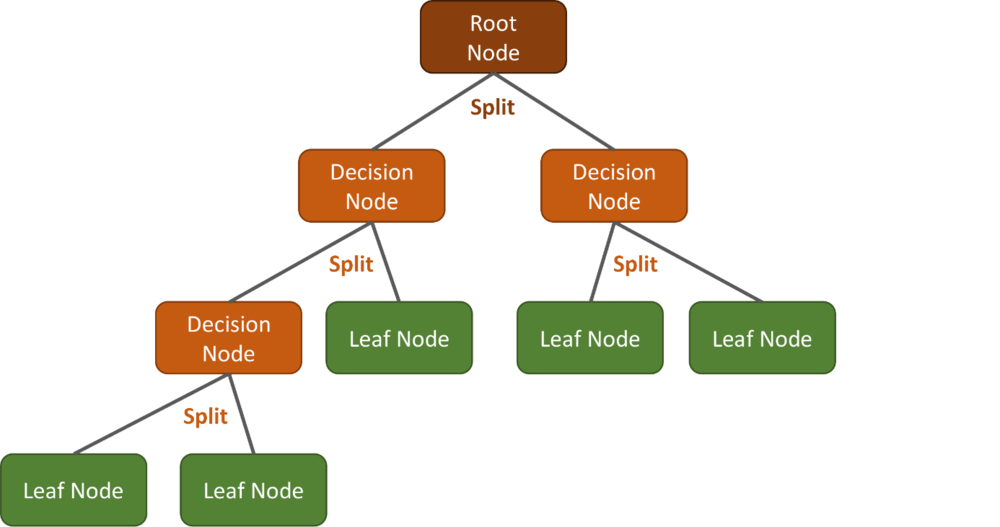
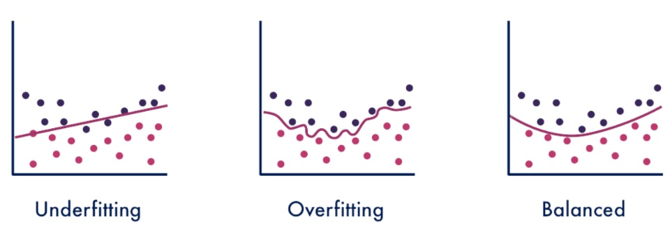
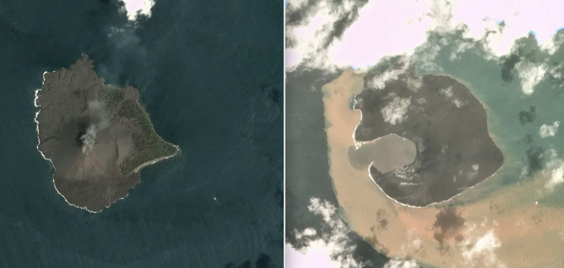

7 Classification I
7.1 Summary
7.1.1 Classification
In remote sensing, classification is a commonly used technique which is the process of categorising pixels or objects of an image to .
7.1.2 CART: Classification and Regression Trees
This consists of a flow diagram or a ‘tree’ of decisions based on the explanatory variables of a dataset. The structure of the decision tree consists of a root node, decision nodes and leaf nodes as can be seen below:

CART Types:
Classification trees - when data output is categorical.
Regression trees - when data output is continuous.
What do we start the tree with?
Gini Impurity: measures the impurity of a group containing different classes. The smaller the Gini Impurity value, the purer the group. The lowest impurity value is what we start the tree with.
Overfitting
Overfitting happens when you produce a good model on the training data that does not perform (therefore generalise) well on unseen data.

For remotely sensed data, this can be addressed by:
Limiting the minimum number of pixels in a leaf.
Weakest link pruning.
7.1.3 Random Forest
A Random Forest is a collection of several CARTs. It can be applied to both classification and regression problems. Each CART in the Random Forest would see different training data from the same dataset.
7.1.4 Image Classification
The process of categorising every pixel in an image into a pre-defined classification.
This is either a supervised or unsupervised procedure:
Supervised:
Relies on information to provide a training samples for different the different classes we are interested in. From these training samples, the classifier learns patterns in the data that it uses to then place labels on new and unseen data.
Unsupervised:
Does not require any previous information or training samples. Identifies classes by clustering pixels based on spectral values or other similarities.
Maximum Likelihood
This is a method that determines values for the parameters of the model. In remote sensing, this method assumes the statistics for each class in each band are normally distributed and then determines the probability that a pixel belongs to a specific class. A probability threshold can also be set which means if a pixel is below it, it will have no classification. Otherwise, if not set, every pixel will be assigned a class.
Support Vector Machine (SVM)
This is a machine learning model that uses classifier algorithms for binary classification problems. It conducts optimal data transformations to establish boundaries between data points based on predefined classes, outputs or labels.
7.2 Applications
There are plenty of ways to use classification:
Mapping different types of green spaces.
Urban land cover mapping.
Detecting burned areas in forest fires.
Detecting flood prone areas.
I found a specific example that used the Random Forest classifier to detect building damage in Labuan, Indonesia which was caused by the Anak Krakatau volcano tsunami in 2018 (Virtriana et al. 2023). Data used to assess images before and after the tsunami came from Sentinel-2A and Worldview-2. Worldview-2 provided high spatial resolution data (50cm) which allowed for smaller changes to be detected more effectively than Sentinel-2A. xBDand Copernicus data were also used to interpret and compare the accuracy of building damage.
The random forest classifier was specifically used to detect and classify post-tsunami damage to buildings and was chosen due to it’s accuracy with object detection.
This study also completed a field survey two years and nine months after the tsunami to observe building changes and recovery efforts. This field survey is what made this study stand out to me. I think completing field surveys after damage assessments is effective as it can track progress and accountability if progress is slow and significantly impacting residents.

I also found two studies(Qian et al. 2015; Shao and Lunetta 2012) that compared classification techniques, specifically SVM and CART algorithms for land-cover classification. In both, SVM performed better than the CART, having a higher overall accuracy in land cover classification. However, there are still disadvantages to SVM such as it is not suitable for large datasets and that it does not perform well if the data has a lot of noise. So we should still carefully consider which classifier would be a better fit depending on the project.
7.3 Reflections
I have come across CART and Random Forest classifiers in another module, so it was nice to reinforce that learning and to see how these techniques can be applied to remotely sensed data. It’s easy to see the number of city-wide projects and policy issues these image classification techniques can help to tackle, but it’s also easy to forget that the products created will never be 100% accurate. I can see how the uncertainties that arise from these algorithms might be easily misunderstood by stakeholders and so it’s important for us as researchers to understand the processes behind the algorithms and be able to explain this if needed.
On a similar note, over the past few weeks I’ve constantly been thinking about the research possibilities that remote sensing brings to the table however, when reviewing image classification I started to think about potential ethical and legal issues, particularly surrounding privacy. I can imagine this being a particular issue with high-resolution remotely sensed data, especially when used by governments or industries. The absence of international rules and recommendations adds a layer of complexity to this as of course remotely sensed data often covers all of the earth’s surface, while regarding data privacy is often on the national level. It’s definitely something to keep in mind in this field of study.